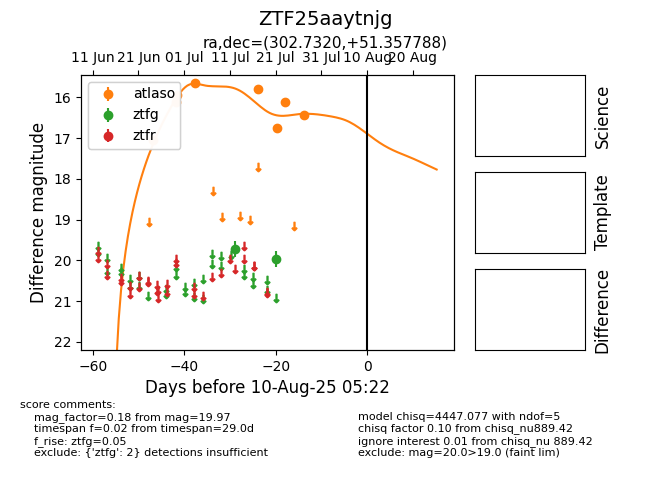

Target ZTF25aaytnjg at 2025-08-10 05:22, see:
FINK: fink-portal.org/ZTF25aaytnjg
Lasair: lasair-ztf.lsst.ac.uk/objects/ZTF25aaytnjg
ALeRCE: alerce.online/object/ZTF25aaytnjg
alt names
ZTF25aaytnjg (ztf,fink)
coordinates:
equatorial (ra, dec) = (302.7320,+51.35779)
galactic (l, b) = (86.3723,+9.62701)
photometry
last atlaso=16.44, ztfg=19.97
8 atlaso, 2 ztfg detections
